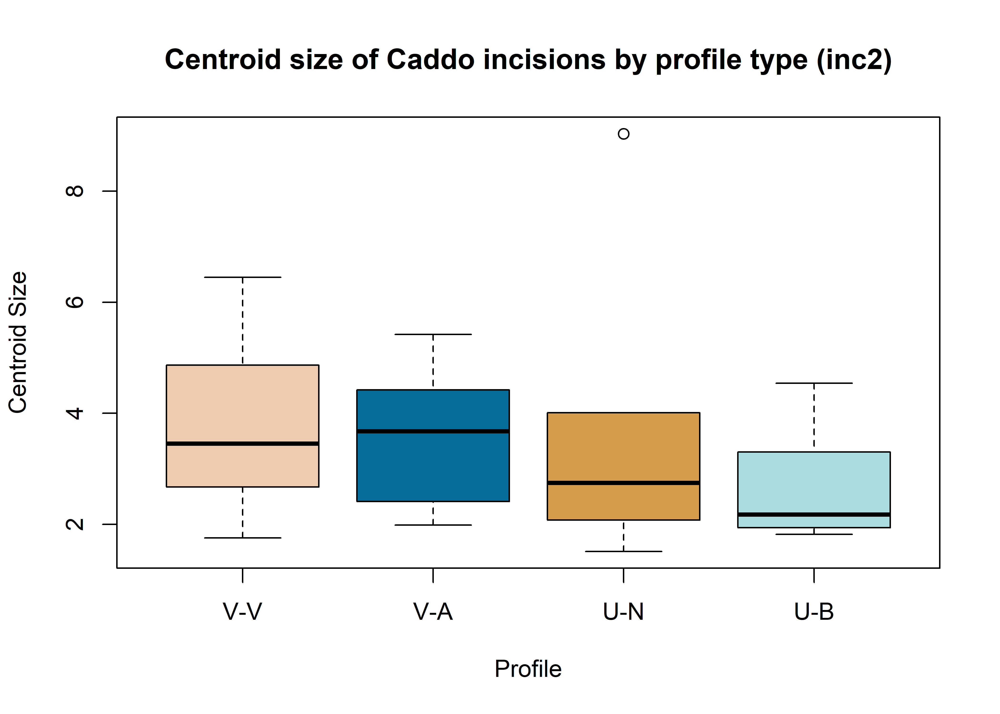
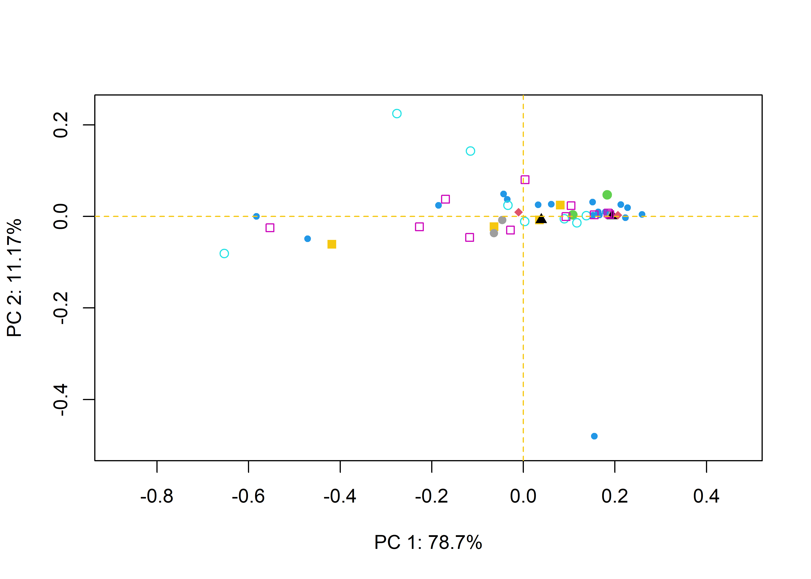
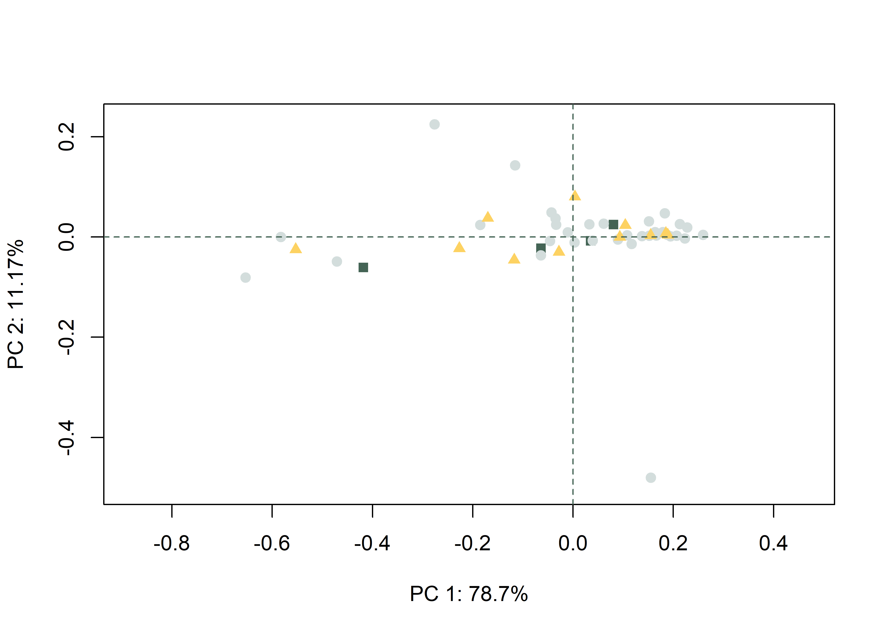
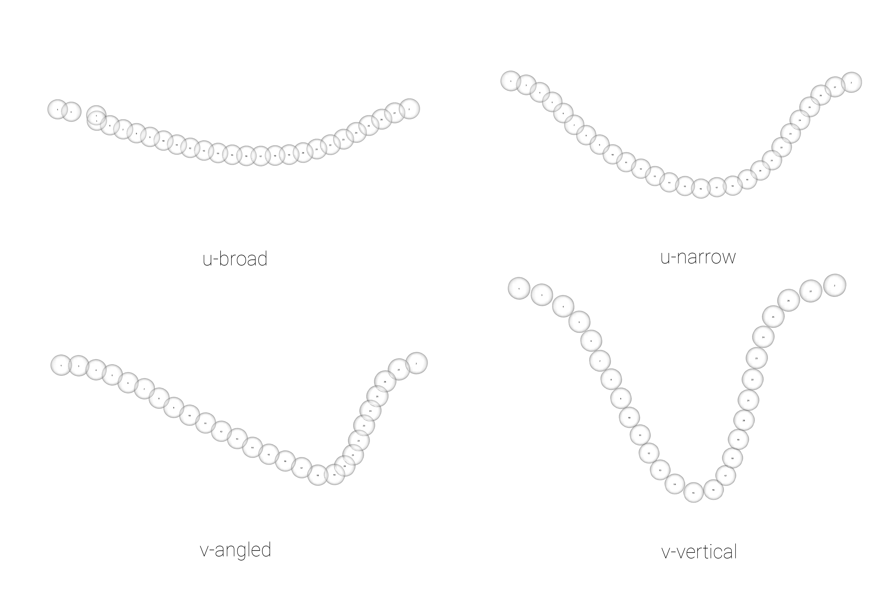

This volume is in Open Review. I want your feedback to make the volume better for you and other readers. To add your annotation, select some text and then click the on the pop-up menu. To see the annotations of others, click the in the upper right hand corner of the page
Chapter 7 Archaeological sample - analysis
7.1 Generalised Procrustes Analysis
# library(devtools)
# devtools::install_github("geomorphR/geomorph", ref = "Stable", build_vignettes = TRUE)
library(geomorph)
library(wesanderson)
setwd(getwd())
# read GM data
source('readmulti.csv.R')
# read .csv files
setwd("./data1")
filelist <- list.files(pattern = ".csv")
coords <- readmulti.csv(filelist)
setwd("../")
# read qualitative data
qdata <- read.csv("qdata1.csv",header=TRUE,row.names=1)
qdata <- qdata[match(dimnames(coords)[[3]],rownames(qdata)),]
# print qdata
knitr::kable(qdata, align = "ccccc", caption = "Attributes included in qdata.")| site | unit | county | incision | inc2 | |
|---|---|---|---|---|---|
| 41sa66-4 | sa66 | angelinaNF | san-augustine | v | v |
| 41sa66-5 | sa66 | angelinaNF | san-augustine | u | ub |
| 41sa66-6 | sa66 | angelinaNF | san-augustine | u | un |
| 41sa66 | sa66 | angelinaNF | san-augustine | u | ub |
| 41sb125-11-lot50 | sb125 | sabineNF | sabine | u | ub |
| 41sb125-2-lot100 | sb125 | sabineNF | sabine | u | un |
| 41sb125-3-lot99 | sb125 | sabineNF | sabine | u | un |
| 41sb189-10-lot17 | sb189 | sabineNF | sabine | u | ub |
| 41sb189-9-lot17 | sb189 | sabineNF | sabine | u | ub |
| 41sb291-4-lot245 | sb291 | sabineNF | sabine | u | un |
| 41sb291-9-lot229 | sb291 | sabineNF | sabine | u | ub |
| 41sy258-st2-1020 | sy258 | sabineNF | shelby | v | v |
| 41sy258-st3-2030 | sy258 | sabineNF | shelby | u | ub |
| 41sy280-101 | sy280 | sabineNF | shelby | v | v |
| 41sy280-11 | sy280 | sabineNF | shelby | u | ub |
| 41sy280-127 | sy280 | sabineNF | shelby | u | ub |
| 41sy280-18 | sy280 | sabineNF | shelby | u | ub |
| 41sy280-20 | sy280 | sabineNF | shelby | u | ub |
| 41sy280-82 | sy280 | sabineNF | shelby | u | ub |
| 41sy280-84 | sy280 | sabineNF | shelby | u | un |
| 41sy280-lot107 | sy280 | sabineNF | shelby | u | ub |
| 41sy280-lot112 | sy280 | sabineNF | shelby | u | ub |
| 41sy280-lot125 | sy280 | sabineNF | shelby | u | ub |
| 41sy280-lot31 | sy280 | sabineNF | shelby | u | un |
| 41sy280-lot48 | sy280 | sabineNF | shelby | u | ub |
| 41sy280-lot50 | sy280 | sabineNF | shelby | v | v |
| 41sy280-lot52 | sy280 | sabineNF | shelby | u | un |
| 41sy280-lot90 | sy280 | sabineNF | shelby | u | ub |
| 41sy280-lot91 | sy280 | sabineNF | shelby | u | ub |
| 41sy280-lot94 | sy280 | sabineNF | shelby | v | v |
| 41sy43-1 | sy43 | sabineNF | shelby | v | v |
| 41sy43-13-1191 | sy43 | sabineNF | shelby | u | ub |
| 41sy43-19 | sy43 | sabineNF | shelby | u | un |
| 41sy43-fsn1-830 | sy43 | sabineNF | shelby | u | ub |
| 41sy43-k2-2737 | sy43 | sabineNF | shelby | u | un |
| 41sy43-k6-1020 | sy43 | sabineNF | shelby | u | ub |
| 41sy43-k8-17 | sy43 | sabineNF | shelby | v | v |
| 41sy43-lot1035 | sy43 | sabineNF | shelby | v | v |
| 41tn91-u1-010 | tn91 | davycNF | trinity | u | un |
| 41tn91-u1-2030 | tn91 | davycNF | trinity | u | ub |
| 41tn91-u2-1020 | tn91 | davycNF | trinity | u | un |
| 41tn91-u2-lot17 | tn91 | davycNF | trinity | v | v |
| 41tn91-u3-2030 | tn91 | davycNF | trinity | u | ub |
| 41tn91-u4-020 | tn91 | davycNF | trinity | u | ub |
| 41tn91-u4-4050 | tn91 | davycNF | trinity | u | un |
| 41tn91-u4-5060 | tn91 | davycNF | trinity | v | v |
| 41tn91-u6-3040 | tn91 | davycNF | trinity | u | ub |
| 41tn91-u7-3040 | tn91 | davycNF | trinity | v | v |
| 41tn91-u8-1020 | tn91 | davycNF | trinity | v | v |
# gpa
Y.gpa <- gpagen(coords, PrinAxes = TRUE, ProcD = TRUE, Proj = TRUE, print.progress = FALSE)
# gpa plot
knitr::include_graphics('images/gpa3d.png')
fig.cap="Results of generalized Procrustes analysis."
# geomorph data frame
gdf <- geomorph.data.frame(shape = Y.gpa$coords, size = Y.gpa$Csize, site = qdata$site, unit = qdata$unit, county = qdata$county, inc = qdata$incision, inc2 = qdata$inc2)
# attributes for boxplots
csz <- Y.gpa$Csize # centroid size
inc <- qdata$incision # basic incision profile
inc2 <- qdata$inc2 # incision profile + qualitative characteristics
cty <- qdata$county # attribute for boxplot
unt <- qdata$unit # attribute for boxplot
# boxplot of incision (centroid) size by profile type (inc)
boxplot(csz~inc,
main = "Centroid size of Caddo incisions by profile type",
names = c("V","U"),
xlab = "Profile",
ylab = "Centroid Size",
col = wes_palette("Moonrise2"),
)
fig.cap = "Boxplot of incision profile types (inc)."
# boxplot of incision (centroid) size by profile type (inc2)
boxplot(csz~inc2,
main = "Centroid size of Caddo incisions by profile type (inc2)",
names = c("V","U-N","U-B"),
xlab = "Profile",
ylab = "Centroid Size",
col = wes_palette("Moonrise2"),
)
7.2 Principal Components Analysis
##
## Ordination type: Principal Component Analysis
## Centering and projection: OLS
## Number of observations 49
## Number of vectors 49
##
## Importance of Components:
## Comp1 Comp2 Comp3 Comp4 Comp5
## Eigenvalues 0.05005241 0.007101587 0.004207237 0.001010877 0.0004000871
## Proportion of Variance 0.78696350 0.111656745 0.066149502 0.015893806 0.0062904852
## Cumulative Proportion 0.78696350 0.898620247 0.964769748 0.980663554 0.9869540391
## Comp6 Comp7 Comp8 Comp9 Comp10
## Eigenvalues 0.0002918061 0.0001356203 0.0001049297 0.0000527297 4.893199e-05
## Proportion of Variance 0.0045880063 0.0021323291 0.0016497880 0.0008290579 7.693473e-04
## Cumulative Proportion 0.9915420454 0.9936743745 0.9953241625 0.9961532203 9.969226e-01
## Comp11 Comp12 Comp13 Comp14 Comp15
## Eigenvalues 4.140238e-05 2.795772e-05 2.477753e-05 1.839935e-05 1.553619e-05
## Proportion of Variance 6.509609e-04 4.395733e-04 3.895719e-04 2.892891e-04 2.442723e-04
## Cumulative Proportion 9.975735e-01 9.980131e-01 9.984027e-01 9.986920e-01 9.989362e-01
## Comp16 Comp17 Comp18 Comp19 Comp20
## Eigenvalues 1.245841e-05 1.099519e-05 8.857840e-06 6.205629e-06 4.605748e-06
## Proportion of Variance 1.958810e-04 1.728750e-04 1.392699e-04 9.756980e-05 7.241520e-05
## Cumulative Proportion 9.991321e-01 9.993050e-01 9.994443e-01 9.995418e-01 9.996142e-01
## Comp21 Comp22 Comp23 Comp24 Comp25
## Eigenvalues 4.189723e-06 3.711596e-06 2.789934e-06 2.436159e-06 2.014312e-06
## Proportion of Variance 6.587413e-05 5.835663e-05 4.386554e-05 3.830321e-05 3.167061e-05
## Cumulative Proportion 9.996801e-01 9.997385e-01 9.997823e-01 9.998206e-01 9.998523e-01
## Comp26 Comp27 Comp28 Comp29 Comp30
## Eigenvalues 1.668968e-06 1.638174e-06 1.185650e-06 9.495449e-07 6.727711e-07
## Proportion of Variance 2.624083e-05 2.575666e-05 1.864172e-05 1.492949e-05 1.057784e-05
## Cumulative Proportion 9.998786e-01 9.999043e-01 9.999230e-01 9.999379e-01 9.999485e-01
## Comp31 Comp32 Comp33 Comp34 Comp35
## Eigenvalues 5.815500e-07 5.340935e-07 4.357276e-07 3.526829e-07 3.270684e-07
## Proportion of Variance 9.143587e-06 8.397439e-06 6.850853e-06 5.545159e-06 5.142428e-06
## Cumulative Proportion 9.999576e-01 9.999660e-01 9.999729e-01 9.999784e-01 9.999835e-01
## Comp36 Comp37 Comp38 Comp39 Comp40
## Eigenvalues 2.945186e-07 2.223463e-07 1.565223e-07 1.011302e-07 8.479653e-08
## Proportion of Variance 4.630653e-06 3.495905e-06 2.460967e-06 1.590049e-06 1.333238e-06
## Cumulative Proportion 9.999882e-01 9.999917e-01 9.999941e-01 9.999957e-01 9.999971e-01
## Comp41 Comp42 Comp43 Comp44 Comp45
## Eigenvalues 6.032788e-08 4.167519e-08 3.236851e-08 2.524843e-08 1.466766e-08
## Proportion of Variance 9.485225e-07 6.552502e-07 5.089232e-07 3.969758e-07 2.306165e-07
## Cumulative Proportion 9.999980e-01 9.999987e-01 9.999992e-01 9.999996e-01 9.999998e-01
## Comp46 Comp47 Comp48 Comp49
## Eigenvalues 8.934916e-09 3.680275e-09 5.264413e-10 4.805676e-34
## Proportion of Variance 1.404818e-07 5.786418e-08 8.277125e-09 7.555862e-33
## Cumulative Proportion 9.999999e-01 1.000000e+00 1.000000e+00 1.000000e+00# set plot parameters to plot by incision type
inc <- qdata$incision
pch.gps.inc <- c(15,17)[as.factor(inc)]
col.gps.inc <- wes_palette("Moonrise2")[as.factor(inc)]
col.hull <- c("#C27D38","#798E87")
# plot pca by incision profile
pc.plot1 <- plot(pca, asp = 1,
pch = pch.gps.inc,
col = col.gps.inc)
shapeHulls(pc.plot1,
groups = inc,
group.cols = col.hull)
# set plot parameters to plot by incision profile (inc2)
inc2 <- qdata$inc2
pch.gps.inc2 <- c(15,17,19)[as.factor(inc2)]
col.gps.inc2 <- wes_palette("Moonrise2")[as.factor(inc2)]
col.hull2 <- c("#CCC591","#798E87","#C27D38")
# plot pca by incision profile (inc2)
pc.plot2 <- plot(pca, asp = 1,
pch = pch.gps.inc2,
col = col.gps.inc2)
shapeHulls(pc.plot2,
groups = inc2,
group.cols = col.hull2)
7.3 Define models
# size as a function of group
fit.sizeinc <- procD.lm(size ~ inc, data = gdf, print.progress = FALSE, iter = 9999)
fit.sizeinc2 <- procD.lm(size ~ inc2, data = gdf, print.progress = FALSE, iter = 9999)
# shape as a function of group
fit.shapeinc <- procD.lm(shape ~ inc, data = gdf, print.progress = FALSE, iter = 9999)
fit.shapeinc2 <- procD.lm(shape ~ inc2, data = gdf, print.progress = FALSE, iter = 9999)7.4 Size/Shape ~ Incision Profile?
##
## Analysis of Variance, using Residual Randomization
## Permutation procedure: Randomization of null model residuals
## Number of permutations: 10000
## Estimation method: Ordinary Least Squares
## Sums of Squares and Cross-products: Type I
## Effect sizes (Z) based on F distributions
##
## Df SS MS Rsq F Z Pr(>F)
## inc 1 1.0443 1.04433 0.34208 24.437 3.5466 1e-04 ***
## Residuals 47 2.0086 0.04274 0.65792
## Total 48 3.0529
## ---
## Signif. codes: 0 '***' 0.001 '**' 0.01 '*' 0.05 '.' 0.1 ' ' 1
##
## Call: procD.lm(f1 = shape ~ inc, iter = 9999, data = gdf, print.progress = FALSE)##
## Analysis of Variance, using Residual Randomization
## Permutation procedure: Randomization of null model residuals
## Number of permutations: 10000
## Estimation method: Ordinary Least Squares
## Sums of Squares and Cross-products: Type I
## Effect sizes (Z) based on F distributions
##
## Df SS MS Rsq F Z Pr(>F)
## inc 1 2.289 2.2891 0.01985 0.9516 0.52362 0.3419
## Residuals 47 113.053 2.4054 0.98015
## Total 48 115.342
##
## Call: procD.lm(f1 = size ~ inc, iter = 9999, data = gdf, print.progress = FALSE)7.5 Size/Shape ~ Incision Profile 2?
##
## Analysis of Variance, using Residual Randomization
## Permutation procedure: Randomization of null model residuals
## Number of permutations: 10000
## Estimation method: Ordinary Least Squares
## Sums of Squares and Cross-products: Type I
## Effect sizes (Z) based on F distributions
##
## Df SS MS Rsq F Z Pr(>F)
## inc2 2 1.4218 0.71088 0.46571 20.048 4.2566 1e-04 ***
## Residuals 46 1.6311 0.03546 0.53429
## Total 48 3.0529
## ---
## Signif. codes: 0 '***' 0.001 '**' 0.01 '*' 0.05 '.' 0.1 ' ' 1
##
## Call: procD.lm(f1 = shape ~ inc2, iter = 9999, data = gdf, print.progress = FALSE)# pairwise comparison of LS means = which differ?
sh.inc2 <- pairwise(fit.shapeinc2, groups = qdata$inc2)
summary(sh.inc2, confidence = 0.95, test.type = "dist")##
## Pairwise comparisons
##
## Groups: ub un v
##
## RRPP: 10000 permutations
##
## LS means:
## Vectors hidden (use show.vectors = TRUE to view)
##
## Pairwise distances between means, plus statistics
## d UCL (95%) Z Pr > d
## ub:un 0.2157557 0.1581367 3.383701 0.0062
## ub:v 0.4077494 0.1582476 8.161894 0.0001
## un:v 0.2010972 0.1849624 2.328530 0.0304# pairwise distance between variances = standardization?
summary(sh.inc2, confidence = 0.95, test.type = "var")##
## Pairwise comparisons
##
## Groups: ub un v
##
## RRPP: 10000 permutations
##
##
## Observed variances by group
##
## ub un v
## 0.016293465 0.009013611 0.092969205
##
## Pairwise distances between variances, plus statistics
## d UCL (95%) Z Pr > d
## ub:un 0.007279854 0.03905262 -0.7743531 0.7369
## ub:v 0.076675739 0.03902052 4.9950780 0.0003
## un:v 0.083955593 0.04612575 4.5534741 0.0002##
## Analysis of Variance, using Residual Randomization
## Permutation procedure: Randomization of null model residuals
## Number of permutations: 10000
## Estimation method: Ordinary Least Squares
## Sums of Squares and Cross-products: Type I
## Effect sizes (Z) based on F distributions
##
## Df SS MS Rsq F Z Pr(>F)
## inc2 2 2.768 1.3840 0.024 0.5655 -0.017125 0.5806
## Residuals 46 112.574 2.4473 0.976
## Total 48 115.342
##
## Call: procD.lm(f1 = size ~ inc2, iter = 9999, data = gdf, print.progress = FALSE)# pairwise comparison of LS means = which differ?
sz.inc2 <- pairwise(fit.sizeinc2, groups = qdata$inc2)
summary(sz.inc2, confidence = 0.95, test.type = "dist")##
## Pairwise comparisons
##
## Groups: ub un v
##
## RRPP: 10000 permutations
##
## LS means:
## Vectors hidden (use show.vectors = TRUE to view)
##
## Pairwise distances between means, plus statistics
## d UCL (95%) Z Pr > d
## ub:un 0.2430178 1.053165 -0.5888278 0.6608
## ub:v 0.5814296 1.071510 0.4236909 0.3003
## un:v 0.3384118 1.226190 -0.4430788 0.5999# pairwise distance between variances = standardization?
summary(sz.inc2, confidence = 0.95, test.type = "var")##
## Pairwise comparisons
##
## Groups: ub un v
##
## RRPP: 10000 permutations
##
##
## Observed variances by group
##
## ub un v
## 2.002335 1.268265 3.941389
##
## Pairwise distances between variances, plus statistics
## d UCL (95%) Z Pr > d
## ub:un 0.7340703 3.184598 -0.7589678 0.7242
## ub:v 1.9390542 3.180422 0.5157811 0.2893
## un:v 2.6731245 3.538677 0.8846225 0.25957.6 Morphological disparity
# morphological disparity: does incision morphology display greater shape variation among individuals relative to incision profile (inc or inc2)?
# incision
morphol.disparity(fit.shapeinc, groups = qdata$incision, data = gdf, print.progress = FALSE, iter = 9999)##
## Call:
## morphol.disparity(f1 = fit.shapeinc, groups = qdata$incision,
## iter = 9999, data = gdf, print.progress = FALSE)
##
##
##
## Randomized Residual Permutation Procedure Used
## 10000 Permutations
##
## Procrustes variances for defined groups
## u v
## 0.02413342 0.09296920
##
##
## Pairwise absolute differences between variances
## u v
## u 0.00000000 0.06883579
## v 0.06883579 0.00000000
##
##
## P-Values
## u v
## u 1e+00 7e-04
## v 7e-04 1e+00# inc2
morphol.disparity(fit.shapeinc2, groups = qdata$inc2, data = gdf, print.progress = FALSE, iter = 9999)##
## Call:
## morphol.disparity(f1 = fit.shapeinc2, groups = qdata$inc2, iter = 9999,
## data = gdf, print.progress = FALSE)
##
##
##
## Randomized Residual Permutation Procedure Used
## 10000 Permutations
##
## Procrustes variances for defined groups
## ub un v
## 0.016293465 0.009013611 0.092969205
##
##
## Pairwise absolute differences between variances
## ub un v
## ub 0.000000000 0.007279854 0.07667574
## un 0.007279854 0.000000000 0.08395559
## v 0.076675739 0.083955593 0.00000000
##
##
## P-Values
## ub un v
## ub 1.0000 0.7369 3e-04
## un 0.7369 1.0000 2e-04
## v 0.0003 0.0002 1e+00# morphological disparity: does incision morphology display greater size variation among individuals relative to incision profile (inc or inc2)?
# incision
morphol.disparity(fit.sizeinc, groups = qdata$incision, data = gdf, print.progress = FALSE, iter = 9999)##
## Call:
## morphol.disparity(f1 = fit.sizeinc, groups = qdata$incision,
## iter = 9999, data = gdf, print.progress = FALSE)
##
##
##
## Randomized Residual Permutation Procedure Used
## 10000 Permutations
##
## Procrustes variances for defined groups
## u v
## 1.777200 3.941389
##
##
## Pairwise absolute differences between variances
## u v
## u 0.000000 2.164189
## v 2.164189 0.000000
##
##
## P-Values
## u v
## u 1.0000 0.2052
## v 0.2052 1.0000# inc2
morphol.disparity(fit.sizeinc2, groups = qdata$inc2, data = gdf, print.progress = FALSE, iter = 9999)##
## Call:
## morphol.disparity(f1 = fit.sizeinc2, groups = qdata$inc2, iter = 9999,
## data = gdf, print.progress = FALSE)
##
##
##
## Randomized Residual Permutation Procedure Used
## 10000 Permutations
##
## Procrustes variances for defined groups
## ub un v
## 2.002335 1.268265 3.941389
##
##
## Pairwise absolute differences between variances
## ub un v
## ub 0.0000000 0.7340703 1.939054
## un 0.7340703 0.0000000 2.673124
## v 1.9390542 2.6731245 0.000000
##
##
## P-Values
## ub un v
## ub 1.0000 0.7242 0.2893
## un 0.7242 1.0000 0.2595
## v 0.2893 0.2595 1.00007.7 Mean shapes
# subset landmark coordinates to produce mean shapes by site
new.coords <- coords.subset(A = Y.gpa$coords, group = qdata$inc2)
names(new.coords)## [1] "ub" "un" "v"# group shape means
mean <- lapply(new.coords, mshape)
# plot(mean$vv)
# mean shapes
knitr::include_graphics('images/inc2-mshape.png')